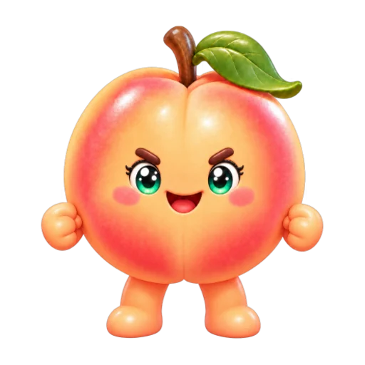
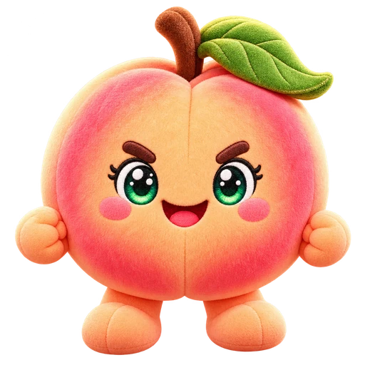

Toque na pelúcia · arraste para ajustar
Abrindo a máquina…

1. Toque na pelúcia que você quer. A garra vai até o ponto tocado; o alvo verde mostra onde ela vai descer.
2. Arraste para ajustar e toque em PEGAR. A garra balança: escolha o instante em que a mira passar no centro da peça. Você também pode ajustar com as setas do teclado.
Para conferir a profundidade, use FRENTE e LADO. Os botões + e − aproximam e afastam a câmera. Dois dedos giram a visão; a pinça ou a roda do mouse ajustam o zoom. Esses controles não movem a mira.
As peças valem de 1,2× a 3×. O recebimento inclui a aposta. O resultado depende da sua mira, sem sorteio escondido para soltar a garra.
